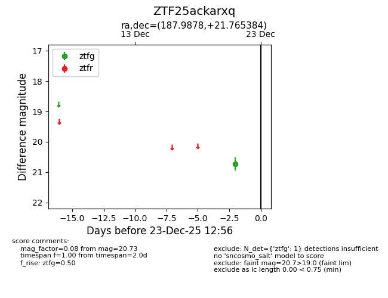
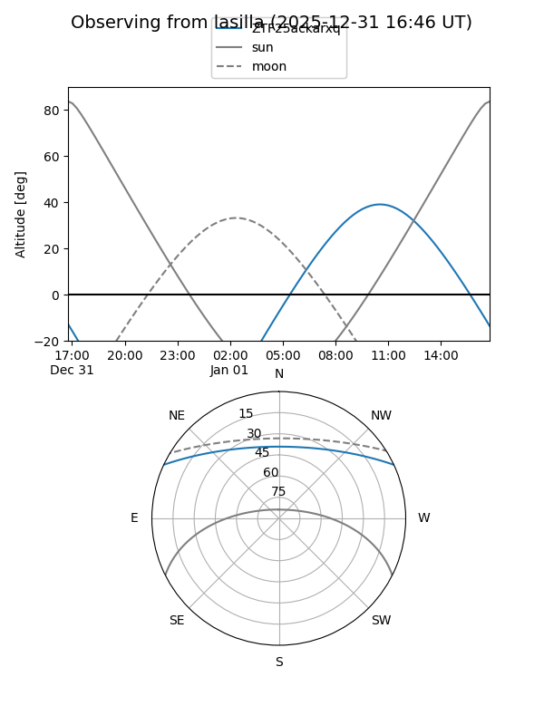
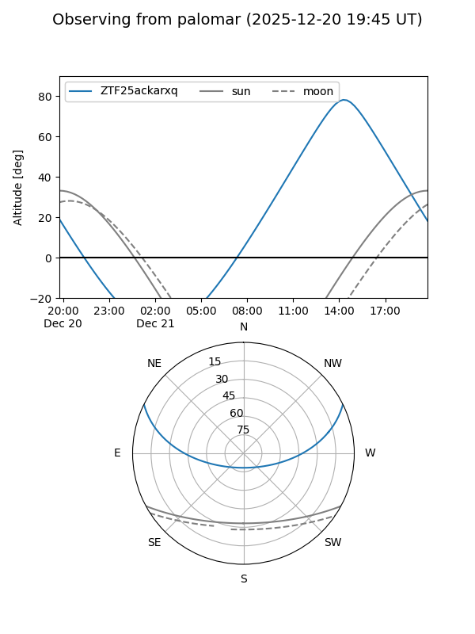

ZTF25ackarxq
Target ZTF25ackarxq at 2025-12-21 12:57
Aliases and brokers:
FINK: fink-portal.org/ZTF25ackarxq
Lasair: lasair-ztf.lsst.ac.uk/objects/ZTF25ackarxq
ALeRCE: alerce.online/object/ZTF25ackarxq
alt names
ZTF25ackarxq (ztf,fink_ztf)
Coordinates:
equatorial (ra, dec) = 187.9878,+21.76538
equatorial (HMS+DMS) = 12:31:57.06,+21:45:55.38
galactic (l, b) = (262.3052,+83.04272)
Flags:
Photometry:
last ztfg=20.73
1 ztfg detections
Lightcurve

Visibility


Additional plots